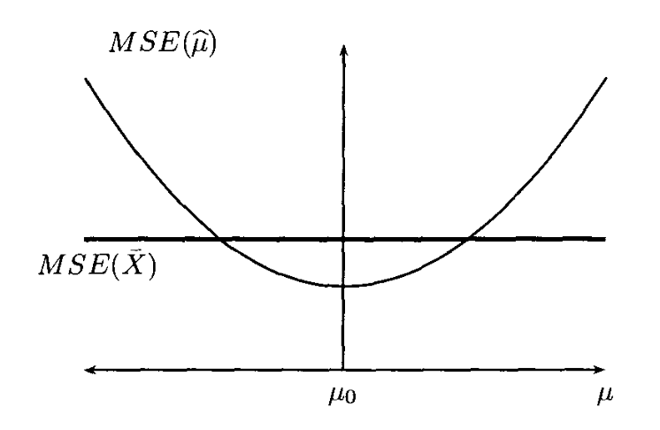
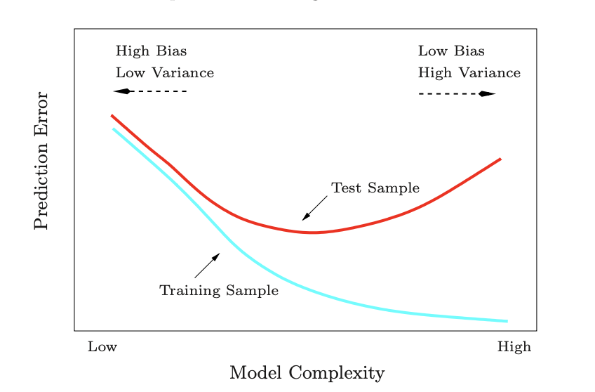
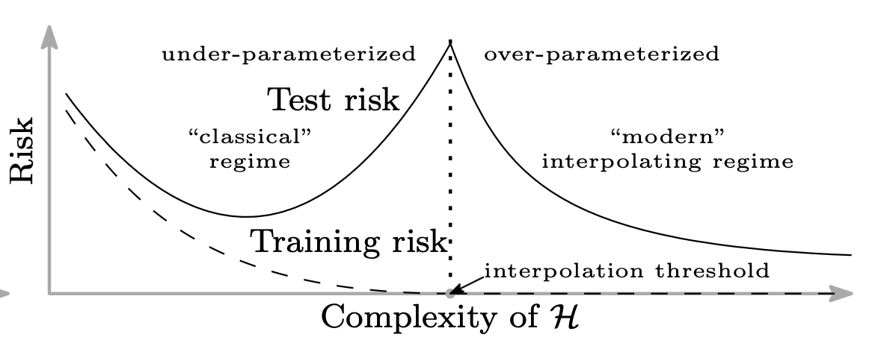
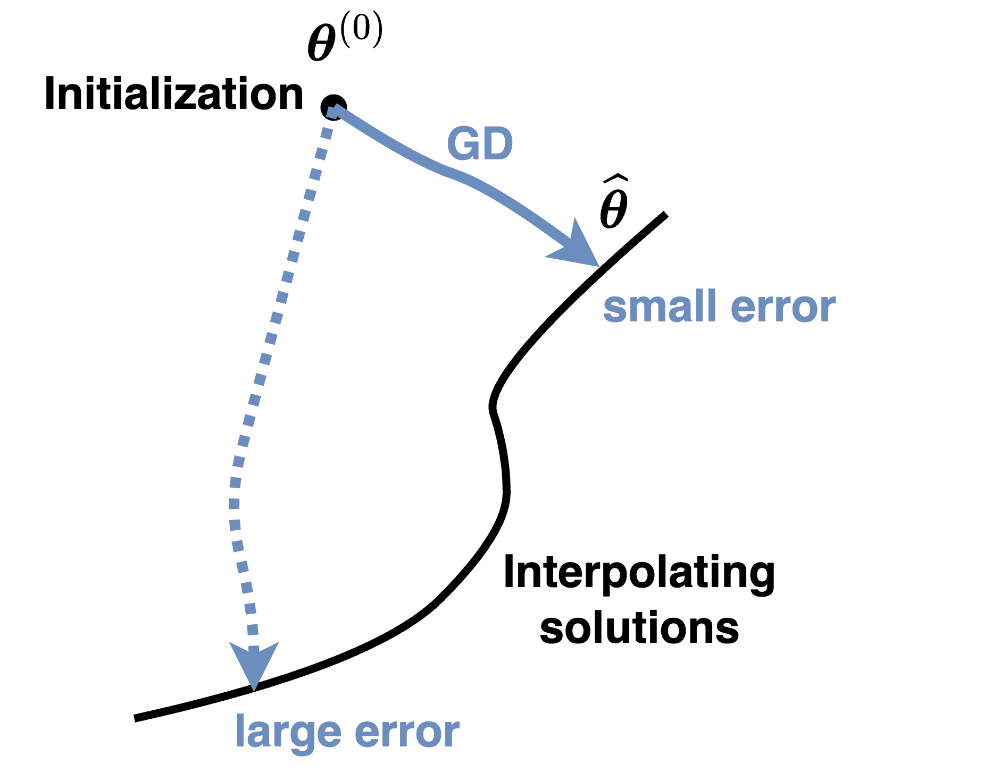
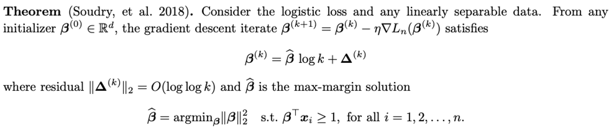

These notes are used for STAT 709 “Mathematical Statistics” at the University of Wisconsin–Madison. They are a learning aid rather than a substitute for a textbook; corrections and questions are welcome.
Overview.
Recurring themes. The goal of this lecture is to understand recurring themes in statistics: the bias–variance tradeoff, model complexity, and regularization. Ridge regression is our main case study: one tuning parameter lets us adjust how freely an estimator follows the data. We use it to see why reducing flexibility can improve accuracy, even when it introduces bias. The same questions guide our discussion of nearest-neighbor prediction and overparameterized models.
Why shrink. Lecture 6 measured a statistical procedure by its expected loss, or risk. Now we ask how that risk changes when we deliberately make a procedure less sensitive to the observed data. An unbiased answer can fluctuate greatly from sample to sample; a small systematic shift can sometimes buy a much larger reduction in that fluctuation. This is the bias–variance tradeoff, a fundamental idea behind many statistical methods.
Route through the lecture. We begin with an income estimate pulled toward a reference value, then study ridge regression and nearest-neighbor prediction. Overparameterized models lead to a further question: if many procedures fit the observations perfectly, which one should we choose? The optional last topic shows how an optimization algorithm can make that choice implicitly.
Learning goals
Decompose squared-error risk into squared bias and variance.
Explain why a small amount of ridge shrinkage can improve risk.
Separate estimation error from prediction error and its fresh noise.
Identify the minimum-norm interpolator and the assumptions behind it.
1. A simple example revisited
For a scalar estimator \(T\) of \(\mu\) with finite second moment, define its bias as \(b_\mu(T)=\E_\mu T-\mu\) and its variance as \(\E_\mu[(T-\E_\mu T)^2]\). Under squared-error loss, its risk is the mean squared error (MSE):
\[R(\mu,T)=\E_\mu[(T-\mu)^2] =b_\mu(T)^2+\var_\mu(T).\]
(1)The expectation averages over repeated samples at the same true parameter. The cross term vanishes after centering \(T\); the full scalar and vector calculation is in Exercise 6, with its complete solution.
In the previous lecture, we learned that natural decision rules may not be optimal. If \(X\sim N(\mu,1)\), the “trivial” estimator \(T_0(X)\equiv0\) has zero variance and bias \(-\mu\), whereas \(T_1(X)=X\) has zero bias and variance \(1\). Their risks are \(\mu^2\) and \(1\), respectively. Which is better depends on \(\mu\); neither is uniformly better than the other.
Following Example 1.3.4 of [3], suppose \(X_1,\ldots,X_n\) are independent household-income measurements with common mean \(\mu\) and variance \(\sigma^2>0\). Write \(\bar X=n^{-1}\sum_iX_i\). Combine this average with a fixed reference \(\mu_0\), for example a census value: \[\hat\mu=0.2\mu_0+0.8\bar X.\] Here \(\mu_0\) is treated as fixed, not estimated from the same sample. Linearity of expectation and independence give \[\begin{align*} b_\mu(\hat\mu)&=0.2(\mu_0-\mu),\\ \var_\mu(\hat\mu)&=0.64\frac{\sigma^2}{n},\\ R(\mu,\hat\mu)&=0.04(\mu_0-\mu)^2+0.64\frac{\sigma^2}{n}. \end{align*}\] The sample mean has risk \(\sigma^2/n\), so the compromise is better when \(\mu\) is sufficiently close to \(\mu_0\). Moving an estimate toward a reference value is called shrinkage.

Instructor’s NoteA stabilizing anchor
Intuitively speaking, the census value acts like an anchor. We still let the new data move our estimate, but not quite as far as the sample mean would move. If the anchor is in a sensible place, it calms the noise. If it is far from the truth, it pulls us in the wrong direction. “Biased” does not automatically mean “bad”; what matters is the total error.
2. Ridge regression
2.1. The model and its normalization
Model and assumptions. Suppose observations \((x_i,y_i)\) satisfy \[y_i=x_i^\top\beta^*+\veps_i,\qquad x_i\in\R^p,\quad y_i\in\R.\] The unknown coefficient is \(\beta^*\in\R^p\). The matrix \(X=[x_1,\ldots,x_n]^\top\in\R^{n\times p}\) is nonrandom; \(y=X\beta^*+\veps\). Assume independent errors of mean zero and common variance \(\sigma^2>0\), so \(\E\veps=0\) and \(\mathrm{Cov}(\veps)=\sigma^2I_n\). Normal errors are not needed.
Objective. Ridge regression minimizes squared training error plus a quadratic penalty:
\[\min_{\beta\in\R^p}\left\{\frac{1}{n}\|y-X\beta\|_2^2 +\lambda\|\beta\|_2^2\right\},\qquad\lambda\ge0.\]
(2)Solution and rank. The tuning parameter \(\lambda\) controls shrinkage. Throughout this section write \(S=X^\top X/n\): the divisor is \(n\). For \(\lambda>0\), \(S+\lambda I_p\) is positive definite, and the unique minimizer is
\[\hat\beta_\lambda=(S+\lambda I_p)^{-1}\frac{X^\top y}{n}.\]
(3)For \(\lambda=0\), this inverse formula requires full column rank of \(X\), meaning that its \(p\) columns are linearly independent. In that case it gives ordinary least squares, \(\hat\beta_0=(X^\top X)^{-1}X^\top y\). To verify the formula, the gradient of the objective is \(2(S+\lambda I_p)\beta-2X^\top y/n\), and its Hessian is \(2(S+\lambda I_p)\). Under the stated conditions this Hessian is positive definite, so setting the gradient to zero gives the unique minimizer. The optional spectral analysis is worked out in Exercise 7.
Intercept convention. We penalize every coefficient in (2). If an intercept is included but is not to be penalized, center the response and predictors first and apply these formulas to the slope coefficients.
Ridge shrinkage: turn the penalty
How does a stronger penalty move the fitted coefficient?
Dashed navy: data lossDotted plum: penaltySolid teal: totalGold: minimum
- λ
- 1
- Shrinkage factor
- 0.5
- Fitted coefficient
- -1
Dashed navy: data lossDotted plum: penaltySolid teal: totalGold: minimum
- λ
- 1
- Shrinkage factor
- 0.5
- Fitted coefficient
- -1
Why orthogonal ridge is one-dimensional
Picture: shrink one coordinate.
Orthogonal design. For a normalized orthogonal design, \(X^\top X/n=I_p\), the ridge formula becomes \(\hat\beta_\lambda=\hat\beta_0/(1+\lambda)\).
One coordinate. Each coordinate solves a separate one-dimensional problem: if its least-squares estimate is \(z\), minimize \((b-z)^2+\lambda b^2\), whose minimizer is \(z/(1+\lambda)\). How does increasing \(\lambda\) change the balance between staying close to the data and staying close to zero?
Fixed-data example. For a fixed observed value \(z=-2\), the estimates at \(\lambda=0,1,3\) are \(-2,-1,-1/2\). The penalty pulls the estimate toward zero while the data stay fixed. These are fitted coefficients for one dataset, not averages over repeated samples.
2.2. What shrinkage does to risk
For a scalar estimator \(T\) of \(\mu\) with finite second moment, define its bias as \(b_\mu(T)=\E_\mu T-\mu\) and its variance as \(\E_\mu[(T-\E_\mu T)^2]\). Under squared-error loss, its risk is the mean squared error (MSE): \[R(\mu,T)=\E_\mu[(T-\mu)^2] =b_\mu(T)^2+\var_\mu(T).\] The expectation averages over repeated samples at the same true parameter. The cross term vanishes after centering \(T\); the full scalar and vector calculation is in Exercise 6, with its complete solution.
Recall the earlier bias–variance identity. For a vector estimator, variance means the total variance, the trace of its covariance matrix. With \(X\) fixed, squared Euclidean loss gives
\[R_\lambda(\beta^*;X)=\E_{\veps}\|\hat\beta_\lambda-\beta^*\|_2^2 =\underbrace{\|\E_{\veps}\hat\beta_\lambda-\beta^*\|_2^2}_{B_\lambda^2} +\underbrace{\tr\{\mathrm{Cov}_{\veps}(\hat\beta_\lambda)\}}_{V_\lambda}.\]
(4)This is coefficient-estimation risk. Prediction at a new input will be considered separately below.
Low priority—not examined: Looking along the eigenvectors
Assume for now that \(X\) has full column rank. Write \(S=Q\,\mathrm{diag}(s_1,\ldots,s_p)Q^\top\), where \(Q\) is orthogonal and \(s_j>0\), and let \(\theta=Q^\top\beta^*\). These coordinates give
\[\begin{aligned} \E\hat\beta_\lambda-\beta^* &=-\lambda(S+\lambda I_p)^{-1}\beta^*,\end{aligned}\]
(5)\[\begin{aligned}B_\lambda^2&=\sum_{j=1}^p \left(\frac{\lambda}{s_j+\lambda}\right)^2\theta_j^2, \end{aligned}\]
(6)\[\begin{aligned}V_\lambda&=\frac{\sigma^2}{n}\sum_{j=1}^p \frac{s_j}{(s_j+\lambda)^2}. \end{aligned}\]
(7)Shrinkage factors. The mean in direction \(j\) is multiplied by \(s_j/(s_j+\lambda)\).
Weak directions. Small eigenvalues describe directions in which the observations provide little information about the coefficient; those directions are shrunk most strongly.
Risk behavior. The total variance decreases with \(\lambda\), whereas squared bias is nondecreasing. At \(\lambda=0\), \(V_0=(\sigma^2/n)\sum_js_j^{-1}=\sigma^2\tr((X^\top X)^{-1})\). The full calculation is in Exercise 7.
Instructor’s NoteTurn down the noisy directions
Think of the fitted coefficients as several audio channels. A weakly measured direction comes with a lot of hiss. Ridge turns down that channel especially strongly. We lose some signal, but we also stop amplifying so much noise. The tradeoff is about the size of the total error, not about insisting that every channel stay unbiased.
Why a little ridge helps.
Hold \(X,n,p,\beta^*\) and \(\sigma^2>0\) fixed and let \(\lambda\downarrow0\). Then \[\begin{align*} \|\E\hat\beta_\lambda-\beta^*\|_2&=O(\lambda), &B_\lambda^2&=O(\lambda^2),\\ V_0-V_\lambda&=\frac{2\sigma^2}{n} \left(\sum_{j=1}^p s_j^{-2}\right)\lambda+O(\lambda^2). \end{align*}\] Thus the variance benefit is first order in \(\lambda\), while the cost in squared bias is second order. For every fixed \(\beta^*\), a sufficiently small positive \(\lambda\) reduces MSE. The suitable interval can depend on \(\beta^*\); this is not a single tuning value that dominates least squares for all possible coefficients. The expansion and its negative risk derivative are proved in Exercise 7.
Picture: two directions.
Take \(n=20\), \(\sigma^2=1\), \(S=\mathrm{diag}(1,0.1)\) and \(\theta=(1,1)^\top\). At \(\lambda=0\), squared bias is \(0\) and variance is \(0.55\). At \(\lambda=0.05\), squared bias is about \(0.1134\) and variance about \(0.2676\), giving risk about \(0.3810\). A picture can show the two shrinkage factors beside the squared-bias, variance and total-risk curves. These numbers are exact-formula evaluations, not a simulation.
3. A general bias–variance tradeoff
3.1. Nearest-neighbor regression
Data and test noise. Consider the regression model \(Y=f(x)+\veps\) at input \(x\), with unknown function \(f\). Collect \(y_i=f(x_i)+\veps_i\) at fixed inputs \(x_1,\ldots,x_n\in\R^p\), with independent mean-zero errors of common variance \(\sigma^2\). For a fixed test input \(x_0\), let \(Y_0=f(x_0)+\veps_0\), where the fresh error \(\veps_0\) is independent of the training errors and has the same mean and variance.
Nearest neighbors. For an integer \(1\le K\le n\), order the inputs by their Euclidean distance to \(x_0\), resolving distance ties by a fixed rule independent of responses. The \(K\)-nearest-neighbor (KNN) estimator averages their responses:
\[\hat f_K(x_0)=\frac1K\sum_{k=1}^K y_{(k)}, \qquad y_{(k)}=f(x_{(k)})+\veps_{(k)}.\]
(8)Error decomposition. Averaging independent noise gives variance \(\sigma^2/K\). The mean is the average of the nearby function values, which need not equal \(f(x_0)\). Consequently,
\[\E[(Y_0-\hat f_K(x_0))^2] =\underbrace{\sigma^2}_{\text{fresh noise}} +\underbrace{\left[\frac1K\sum_{k=1}^K f(x_{(k)})-f(x_0)\right]^2} _{\text{squared bias}} +\underbrace{\frac{\sigma^2}{K}}_{\text{estimator variance}}.\]
(9)Estimation versus prediction. All expectations here are over training and fresh test noise, with the inputs fixed. If the target is the value \(f(x_0)\) instead of \(Y_0\), omit the first \(\sigma^2\): the remaining terms are estimation MSE. Fresh observation noise is called irreducible error in this model. See Exercise 8 for the complete expansion and a bound under a concrete smoothness assumption.
Instructor’s NoteHow large a neighborhood?
The bias term asks how representative our neighbors are of the test point. Intuitively speaking, if the regression function is smooth, nearby points should tell a similar story. A small neighborhood stays local but listens to only a few noisy observations. A large neighborhood quiets the noise by averaging more voices, but some of those voices may come from a different part of the curve. This is why the right neighborhood size matters.
The exact squared bias need not increase at every step in \(K\): particular function values may cancel. A bound based on the farthest selected neighbor makes the usual locality argument precise in Exercise 8.
Nearest neighbors: choose K
Which points join the neighborhood, and how does their average change?
Squares: selected observationsGold diamond: observed predictionDashed navy: true curvePlum ring / dotted line: expected prediction
- Neighbors K
- 3
- Observed average
- -0.05333
- Expected average
- 0.04667
- True f(0.25)
- 0.0625
Selected inputs: 0.2, 0.3, 0.1. Changing K keeps all observations fixed. Readouts are rounded.
Squares: selected observationsGold diamond: observed predictionDashed navy: true curvePlum ring / dotted line: expected prediction
- Neighbors K
- 3
- Observed average
- -0.05333
- Expected average
- 0.04667
- True f(0.25)
- 0.0625
Selected inputs: 0.2, 0.3, 0.1. Changing K keeps all observations fixed. Readouts are rounded.
Reading the neighbor averages and their risk
Picture: widen a local window.
For a separate illustration, take \(x_i=i/10\) for \(i=-10,\ldots,10\), \(f(x)=x^2\), \(x_0=0.25\), and \(\sigma^2=0.09\). At \(K=3\), selecting equal distances by increasing input, the neighbors are \(0.1,0.2,0.3\). Their mean function value is \(0.046\overline6\), versus \(f(x_0)=0.0625\); the estimator variance is \(0.03\) and prediction MSE is about \(0.12025\). A drawing can highlight these neighbors and then widen the window, showing how the averaging level and the error decomposition change. To see an actual fit as well, fix the illustrative responses \(y_i=x_i^2+0.3(-1)^i\). At \(K=3\) their average is \(-0.053\overline3\). This observed average differs from the mean function value above: one realized dataset fluctuates around its expectation.
3.2. Complexity, overfitting, and regularization
Flexibility and noise. Overfitting occurs when a fitted rule responds too strongly to noise in its training observations and performs poorly on new data. High flexibility makes this easier: think of more coefficients or a small ridge penalty, or of small \(K\) in KNN. These are different ways of changing complexity, rather than interchangeable numerical measures.
Exact training fit. At the extreme, a rule may fit every training response exactly. This is interpolation, also called memorization in this setting. For \(p=n\) with invertible \(X\), unpenalized least squares interpolates; KNN with \(K=1\) interpolates at distinct training inputs when each input selects itself. Interpolation describes training fit. Whether it causes poor test performance is a separate question, which Section 4 will revisit.

Instructor’s NoteThe sweet spot
Consider a heuristic argument: a very stiff model misses the shape of the data, while a very flexible one can chase each bump. We look for the sweet spot where the model follows the main pattern without following all the noise. Figure 2 is a helpful mental picture of that balancing act.
Cross-validation repeatedly fits a model on part of the data and measures its prediction error on held-out observations. Averaging these held-out errors helps choose a model or tuning parameter; a final independent test set can assess the chosen procedure.
Choosing a model. In classical statistics, model selection compares candidate models by estimated prediction performance. One common tool is cross-validation.1
Penalizing a fit. Regularization instead builds a preference into the fitting problem, for example by penalizing large coefficients:
\[\min_{\beta}\left\{\frac{1}{2n}\sum_{i=1}^n(y_i-x_i^\top\beta)^2 +\lambda\sum_{j=1}^p|\beta_j|^q\right\},\qquad q\ge1.\]
(10)Penalty and normalization. The penalty is \(\|\beta\|_q^q\). The choices \(q=1\) and \(q=2\) give lasso and ridge penalties. Notice the factor \(1/(2n)\): when \(q=2\), the estimator in (10) is (3) with \(2\lambda\) in place of \(\lambda\). A tuning parameter must be interpreted together with the loss normalization. We will return to regularized models later.
Effective degrees of freedom.
For ridge fitted responses \(\hat y=H_\lambda y\), the smoother matrix is \(H_\lambda=X(X^\top X+n\lambda I_p)^{-1}X^\top\). Its effective degrees of freedom is \[\mathrm{df}(\lambda)=\tr(H_\lambda) =\sum_{j=1}^{r}\frac{d_j^2}{d_j^2+n\lambda}, \qquad r=\mathrm{rank}(X),\] where \(d_j>0\) are the nonzero singular values of \(X\), and \(\lambda>0\). The quantity measures total sensitivity of fitted responses to responses in the data. As \(\lambda\downarrow0\) it tends to \(r\); increasing the penalty reduces it. The trace formula follows from the singular-value calculation in Exercise 10.
4. Overparameterization
4.1. Prediction variance and the scale of the design
Fixed input. When \(X\) has full column rank, the fitted linear function is \(\hat f(x)=x^\top\hat\beta_0\). At a fixed input \(x\), \[\var_{\veps}(\hat f(x)\mid x,X) =\sigma^2x^\top(X^\top X)^{-1}x.\]
Random test input. Now let a test input \(x_0\) be independent of the training errors, with \(\E x_0=0\) and \(\E[x_0x_0^\top]=I_p\). Average the conditional variance over that input distribution:
\[\mathcal V_X:=\E_{x_0}\big[\var_{\veps}(\hat f(x_0)\mid x_0,X)\big] =\sigma^2\tr((X^\top X)^{-1}).\]
(11)Conditional variance. This uses \(\E[x_0^\top A x_0]=\tr(A\E[x_0x_0^\top])\). It is not the total variance when both \(x_0\) and training noise vary: variation in the true prediction also contributes to that total. Exercise 9 gives the complete calculation.
Design scaling. If \(X^\top X=nI_p\), then \(\mathcal V_X=\sigma^2p/n\). More generally, if the smallest eigenvalue of \(X^\top X/n\) is at least \(c>0\), then \(\mathcal V_X\le\sigma^2p/(cn)\). The factor \(n\) is essential: \(X^\top X=I_p\) instead gives \(\mathcal V_X=\sigma^2p\). Such scale-controlled comparisons explain the usual \(p/n\) variance growth; dimension alone does not determine variance.
4.2. Many exact fits and one minimum-norm choice
An affine set is a translated linear subspace: here start at one particular solution and add any vector annihilated by \(X\). It need not contain zero.
Rank condition. Suppose \(p>n\). Since \(\mathrm{rank}(X^\top X)\le n<p\), the inverse in the ordinary least-squares formula does not exist. Least-squares minimizers still exist, but are not unique. To fit every possible response vector exactly, assume full row rank: \(\mathrm{rank}(X)=n\), or equivalently \(XX^\top\) is invertible.
Solution set. Under this assumption, \(X\beta=y\) has a solution \(\beta_{\rm p}\), and all its solutions form the set
\[\{\beta:X\beta=y\}=\beta_{\rm p}+\ker(X), \qquad\ker(X)=\{z\in\R^p:Xz=0\}.\]
(12)This is an affine set.2
Noisy data. The kernel has dimension \(p-n>0\), so infinitely many solutions interpolate the data. In a noisy model, the true coefficient \(\beta^*\) generally does not belong to this set, since \(X\beta^*=y-\veps\).
Minimum norm. Among the exact fits, choose the one with smallest Euclidean length:
\[\min_{\beta}\|\beta\|_2^2\quad\text{subject to }X\beta=y.\]
(13)
If \(p>n\) and \(X\) has full row rank, (13) has the unique solution
\[\hat\beta_{0+}=X^\top(XX^\top)^{-1}y =\lim_{\lambda\downarrow0}\hat\beta_\lambda.\]
(14)It is called the minimum-norm interpolator or ridgeless estimator. For \(\lambda>0\), the useful dual identity is
\[(X^\top X/n+\lambda I_p)^{-1}\frac{X^\top}{n} =X^\top(XX^\top+n\lambda I_n)^{-1}.\]
(15)It follows by multiplying \((X^\top X+n\lambda I_p)X^\top=X^\top(XX^\top+n\lambda I_n)\) by the two inverses. Taking the limit gives the formula; the proof of minimum norm, uniqueness, and the singular-value version are in Exercise 10.
4.3. What changes beyond the interpolation threshold?
Low priority—not examined: Variance can fall again
For a vector estimator, variance means the total variance, the trace of its covariance matrix. With \(X\) fixed, squared Euclidean loss gives \[R_\lambda(\beta^*;X)=\E_{\veps}\|\hat\beta_\lambda-\beta^*\|_2^2 =\underbrace{\|\E_{\veps}\hat\beta_\lambda-\beta^*\|_2^2}_{B_\lambda^2} +\underbrace{\tr\{\mathrm{Cov}_{\veps}(\hat\beta_\lambda)\}}_{V_\lambda}.\] This is coefficient-estimation risk. Prediction at a new input will be considered separately below.
Return to \(y=X\beta^*+\veps\) with fixed full-row-rank \(X\) and error covariance \(\sigma^2I_n\). Let \(P_X=X^\top(XX^\top)^{-1}X\), the orthogonal projection onto the row space of \(X\). The formulas above give
\[\begin{aligned} \E\hat\beta_{0+}-\beta^*&=-(I_p-P_X)\beta^*,\end{aligned}\]
(16)\[\begin{aligned}\mathrm{Cov}(\hat\beta_{0+})&=\sigma^2X^\top(XX^\top)^{-2}X. \end{aligned}\]
(17)For an independent test input with mean zero and covariance \(I_p\),
\[\mathcal V_X=\sigma^2\tr\{X^\top(XX^\top)^{-2}X\} =\sigma^2\tr((XX^\top)^{-1}).\]
(18)Cyclicity of trace moves the final \(X\) next to \(X^\top\), producing \(XX^\top\). Coefficient MSE, also equal here to test error for estimating \(x_0^\top\beta^*\), is
\[\|(I_p-P_X)\beta^*\|_2^2+\sigma^2\tr((XX^\top)^{-1}).\]
(19)Predicting a fresh noisy response adds \(\sigma^2\). See Exercise 11 for all steps. The squared-bias and variance roles are those of the earlier vector decomposition.
Variance scaling. The roles of \(p\) and \(n\) have flipped: the inverse now acts on an \(n\times n\) matrix. If the smallest eigenvalue of \(XX^\top/p\) is at least \(c>0\), then \(\mathcal V_X\le\sigma^2n/(cp)\). In particular, \(XX^\top=pI_n\) gives \(\mathcal V_X=\sigma^2n/p\).
Unobserved signal. The relevant nonzero spectrum is that of \(XX^\top\), not the singular \(p\times p\) matrix \(X^\top X\). Squared bias can remain because the data cannot determine the component of \(\beta^*\) in \(\ker(X)\).
Instructor’s NoteSpreading the noise
Intuitively speaking, near the interpolation threshold the fit can be forced through a narrow bottleneck: a weak direction has to carry a lot of noise. Far beyond the threshold, many coordinates can share the work. A minimum-norm rule spreads the adjustment instead of making one huge coefficient. This helps explain why very wide models can sometimes need surprisingly little explicit regularization.

The double-descent picture combines the classical first descent with a possible second one beyond interpolation. The behavior depends on the design spectrum, signal, and fitting rule; \(p>n\) alone is not a risk guarantee. Related behavior has also been observed in deep neural-network experiments [5]. The bias–variance identity remains valid throughout: the way its terms vary with complexity can change.
5. The implicit regularization of gradient descent
Low priority—not examined: An algorithm can choose among exact fits
Loss and gradient. This optional section is deterministic: \(X\) and \(y\) are fixed, and no probability model is required. For \(p>n\) and full row rank, consider \[L(\beta)=\|y-X\beta\|_2^2,\qquad \nabla L(\beta)=2X^\top(X\beta-y).\]
Iteration. Gradient descent (GD) starts at \(\beta^{(0)}=0\) and iterates
\[\beta^{(t+1)}=\beta^{(t)}-2\eta X^\top(X\beta^{(t)}-y), \qquad \eta>0.\]
(20)The step size \(\eta\) is also called the learning rate.
Let \(p>n\), let \(XX^\top\) have full rank, and start at zero. If \(0<\eta<[2\lambda_{\max}(XX^\top)]^{-1}\), then \(\beta^{(t)}\to\hat\beta_{0+}=X^\top(XX^\top)^{-1}y\).
Convergence and proof. The stated step-size bound is sufficient; the proof in Exercise 12 establishes the larger range \(0<\eta<1/\lambda_{\max}(XX^\top)\) for this exact loss normalization.
Invariant space. Every update lies in \(\mathrm{range}(X^\top)\), the row space of \(X\). Starting from zero keeps every iterate there. Since that space is orthogonal to \(\ker(X)\), its only interpolator is the minimum-norm one. Contraction of the residual establishes that the iterates actually converge to an interpolator; it is proved explicitly in the exercise.

Instructor’s NoteThe path makes the choice
There are infinitely many places we could end up while fitting the same data. But gradient descent does not wander in every direction: its steps are built from the observed rows of \(X\). Starting from zero, it never walks into the invisible directions in the kernel. The path itself therefore chooses a short solution, even though we never explicitly asked the algorithm to minimize its length. This is implicit regularization.
Picture: follow the row space.
For a separate picture, take \(X=(1\ \ 2)\) and \(y=1\). Exact fits lie on the line \(b_1+2b_2=1\); the nearest point to zero is \((1/5,2/5)\). With \(\eta=0.05\), the first iterate is \((0.1,0.2)\) and subsequent iterates travel along the line spanned by \((1,2)\). The training residual is halved at each step. Marking these iterates connects the algebra to the nearest-point geometry.
5.1. A connection to classification
Low priority—not examined: A limiting direction, not a finite interpolating coefficient
For a nonzero coefficient vector, the decision boundary is \(x^\top\beta=0\); the signed distance of a labeled point is \(a_i x_i^\top\beta/\|\beta\|_2\). Under constraints that the numerator is at least one, minimizing the norm maximizes the smallest such distance.
Logistic loss. The general idea extends beyond squared-error regression. With binary labels \(a_i\in\{-1,1\}\), logistic regression minimizes \[L_{\rm log}(\beta)=\sum_{i=1}^n\log(1+e^{-a_i x_i^\top\beta}).\]
Separability and direction. Assume the data are linearly separable: some \(v\) satisfies \(a_i x_i^\top v>0\) for every \(i\). Scaling this \(v\) drives the logistic loss toward zero, but no finite coefficient makes it zero. Under the step-size and loss conditions of [6] (Theorem 3), GD coefficients diverge in norm while their direction tends to the direction of the maximum-margin separator:
\[\hat\beta_{\rm mm}=\mathop{\rm argmin}_{\beta}\|\beta\|_2^2 \quad\text{subject to }a_i x_i^\top\beta\ge1\quad(1\le i\le n).\]
(21)Geometric margin. The margin compares signed distance to the decision boundary.3
Meaning of fitting. Here “fit the labels” means classify them correctly, not solve \(X\beta=y\) or obtain a finite zero logistic loss. The original paper and proof provide the precise general statement.

Instructor’s NoteKeep moving after classifying correctly
Intuitively speaking, getting the signs right only puts each point on the correct side of the fence. Logistic loss keeps rewarding a wider safety gap. Gradient descent can therefore keep moving after the training classification error is already zero. The direction of that movement reveals the separator the algorithm prefers.
Key notions at a glance
6. Further reading
Further reading: Classical prediction and modern interpolation
Bias–variance tradeoffs are a classical topic. See [4] (Sections 2.3 and 7.3); the KNN example above reformulates that discussion. Ridge regression and its singular-value interpretation are developed in Section 3.4.1 of the same book.
For double descent, see [2] (2018 preprint, 2019 journal publication), and the neural-network experiments in [5]. The original double-descent paper distinguishes model capacity, interpolation, and observed test behavior. For a broad view of overparameterized models motivated by deep learning, see [1]. The classification result in Section 5.1 is an optional connection, not a prerequisite for any high- or mid-priority exercise below.
7. Exercises and complete solutions12 exercises · complete solutions
Under the income example’s assumptions, find exactly when \(0.2\mu_0+0.8\bar X\) has smaller MSE than \(\bar X\), including equality.
Reveal solution
Subtract the sample-mean risk from the displayed shrinkage risk: \[R(\mu,\hat\mu)-R(\mu,\bar X) =0.04(\mu_0-\mu)^2-0.36\frac{\sigma^2}{n}.\] This is negative exactly when \((\mu_0-\mu)^2<9\sigma^2/n\), or \(|\mu-\mu_0|<3\sigma/\sqrt n\). Equality holds at the two endpoints; outside this interval shrinkage has greater MSE. A better variance does not give a uniformly better estimator: the reference can be arbitrarily far from the truth.
Minimize \(q(b)=(b-3)^2+2b^2\) and compare with the minimizer of \((b-3)^2\).
Reveal solution
Expanding gives \(q(b)=3b^2-6b+9=3(b-1)^2+6\). The unique minimum is at \(b=1\), versus \(b=3\) without the penalty. Equivalently, \(q'(b)=6b-6=0\) and \(q''(b)=6>0\). The penalty has shrunk the coefficient toward zero by a factor \(1/3\).
Take \(f(x)=x^2\), inputs \(-1,0,1\), test input \(0\), independent mean-zero errors of variance \(1\), and an independent test response with the same noise variance. Compute prediction MSE for \(K=1\) and \(K=3\).
Reveal solution
For \(K=1\), the closest input is \(0\), so the mean fitted value is \(0\), the bias is \(0\), and the estimator variance is \(1\). Adding test noise gives prediction MSE \(1+0+1=2\). For \(K=3\), the mean fitted value is \((1+0+1)/3=2/3\), so squared bias is \(4/9\) and estimator variance is \(1/3\). Thus prediction MSE is \(1+4/9+1/3=16/9<2\). The bigger neighborhood is biased but has smaller total risk. If estimating \(f(0)\) alone, subtract \(1\) from both answers.
For \(X=(1\ \ 1)\) and \(y=2\), exhibit two distinct interpolators, describe all of them, and find the unique minimum-norm one.
Reveal solution
The constraint is \(b_1+b_2=2\). Two examples are \((2,0)\) and \((0,2)\); all fits have the form \((1+t,1-t)\), \(t\in\R\). Their squared norm is \((1+t)^2+(1-t)^2=2+2t^2\), uniquely minimized at \(t=0\). Hence the minimum-norm fit is \((1,1)\), which also equals \(X^\top(XX^\top)^{-1}y=(1,1)^\top\,2/2\).
Low priority—not examined: Why initialization matters
For \(X=(1\ \ 0)\), \(y=1\), \(0<\eta<1/2\) and initial coefficient \((0,c)\), find the GD iterates and their limit. When is the limit minimum norm?
Reveal solution
Here \(L(b_1,b_2)=(1-b_1)^2\) and its gradient is \((2(b_1-1),0)\). Thus \(b_2^{(t)}=c\) for every \(t\), while \(b_1^{(t+1)}-1=(1-2\eta)(b_1^{(t)}-1)\). Starting from \(b_1^{(0)}=0\) gives \(\beta^{(t)}=(1-(1-2\eta)^t,c)\), which tends to \((1,c)\). Every such limit fits \(y\), but its squared norm is \(1+c^2\). Only \(c=0\) gives the minimum-norm fit \((1,0)\). GD cannot remove a kernel component already present at initialization.
Let \(T\in\R^p\) have finite second moment and let \(\theta\in\R^p\) be fixed. Prove \(\E\|T-\theta\|^2=\tr(\mathrm{Cov}(T))+\|\E T-\theta\|^2\). Explain the scalar case.
Reveal solution
Write \(m=\E T\) and expand: \[\|T-\theta\|^2=\|T-m\|^2+2(T-m)^\top(m-\theta)+\|m-\theta\|^2.\] The middle term has expectation zero because \(\E(T-m)=0\). Also \(\E\|T-m\|^2=\sum_j\E(T_j-m_j)^2 =\tr(\mathrm{Cov}(T))\). All expectations exist by the finite-second-moment assumption. For \(p=1\), trace is simply variance and \(m-\theta\) is the scalar bias, giving (1).
Low priority—not examined: Ridge: minimizer, spectrum, and a local risk gain
Derive (3). Under full column rank and the stated error assumptions, derive (6)–(7) and the small-\(\lambda\) risk comparison. Explain what changes at \(\lambda=0\) without full column rank.
Reveal solution
Optimization. The gradient of the objective is \(2(S+\lambda I_p)\beta-2X^\top y/n\) and its Hessian is \(2(S+\lambda I_p)\). If \(\lambda>0\) the Hessian is positive definite, so setting the gradient to zero gives the unique minimizer. At \(\lambda=0\) this reasoning applies when \(S\) is positive definite. Otherwise the normal equations still have solutions, but adding a vector in \(\ker(X)\) does not change the loss, so the coefficient minimizer is not unique.
Mean and covariance. Substitute \(y=X\beta^*+\veps\) into the ridge formula. Since \(\E\veps=0\), \[\E\hat\beta_\lambda=(S+\lambda I)^{-1}S\beta^*,\qquad \E\hat\beta_\lambda-\beta^*=-\lambda(S+\lambda I)^{-1}\beta^*.\] Moreover \(\mathrm{Cov}(X^\top\veps/n)=\sigma^2 S/n\), whence \[\mathrm{Cov}(\hat\beta_\lambda) =\frac{\sigma^2}{n}(S+\lambda I)^{-1}S(S+\lambda I)^{-1}.\] Rotating by \(Q\) preserves Euclidean norm and trace. In direction \(j\), the bias is \(-\lambda\theta_j/(s_j+\lambda)\) and the variance is \((\sigma^2/n)s_j/(s_j+\lambda)^2\). Summing gives the two claimed formulas. Each squared-bias summand is nondecreasing and every variance summand is strictly decreasing when \(\sigma^2>0\).
First-order benefit versus second-order cost. For fixed \(s_j>0\), \[\frac{\lambda^2}{(s_j+\lambda)^2} =\frac{\lambda^2}{s_j^2}+O(\lambda^3),\qquad \frac{s_j}{(s_j+\lambda)^2} =\frac1{s_j}-\frac{2\lambda}{s_j^2}+O(\lambda^2).\] There are finitely many directions, so \(B_\lambda^2=\lambda^2\sum_j\theta_j^2/s_j^2+O(\lambda^3)\) and \(V_0-V_\lambda=(2\sigma^2/n)\lambda\sum_js_j^{-2}+O(\lambda^2)\). The right derivative of total risk at zero is \(R'_0=-(2\sigma^2/n)\sum_js_j^{-2}<0\). Thus a small positive penalty improves risk for the fixed true coefficient. The expansion constants depend on that coefficient and the positive eigenvalues; it is a fixed-design local conclusion.
Prove (9). If \(|f(x)-f(x_0)|\le L\|x-x_0\|_2\) for each selected neighbor, bound the absolute bias using \(r_K=\max_{k\le K}\|x_{(k)}-x_0\|_2\).
Reveal solution
Write \(m_K=K^{-1}\sum_k f(x_{(k)})\) and \(\bar\veps_K=K^{-1}\sum_k\veps_{(k)}\). The selected indices depend only on fixed inputs. Consequently \(\E\bar\veps_K=0\) and \(\var(\bar\veps_K)=K^{-2}K\sigma^2=\sigma^2/K\). The prediction error is \(Y_0-\hat f_K(x_0)=f(x_0)-m_K+\veps_0-\bar\veps_K\). The two noise terms are independent and centered, so squaring and taking expectation leaves \((f(x_0)-m_K)^2+\sigma^2+\sigma^2/K\). Replacing \(Y_0\) by \(f(x_0)\) removes \(\veps_0\) and its variance. Finally, the triangle inequality gives \[|m_K-f(x_0)|\le\frac1K\sum_{k=1}^K|f(x_{(k)})-f(x_0)| \le\frac L K\sum_{k=1}^K\|x_{(k)}-x_0\|_2\le Lr_K.\] Thus prediction MSE is at most \(\sigma^2+L^2r_K^2+\sigma^2/K\). The radius bound grows with the neighborhood even though the actual bias need not grow monotonically.
Under full column rank, prove (11) when \(\E x_0=0\), \(\E[x_0x_0^\top]=I_p\) and \(x_0\) is independent of the training errors. Find the total variance of \(x_0^\top\hat\beta_0\) over both sources of randomness. State the averaged-variance formula for a general second moment matrix \(M=\E[x_0x_0^\top]\).
Reveal solution
The least-squares error is \((X^\top X)^{-1}X^\top\veps\), with covariance \(\sigma^2(X^\top X)^{-1}\). Therefore at a fixed \(x\) its projection has variance \(\sigma^2x^\top(X^\top X)^{-1}x\). For any fixed matrix \(A\), \[\E[x_0^\top A x_0]=\sum_{j,k}A_{jk}\E[x_{0j}x_{0k}] =\tr(AM).\] Taking \(A=(X^\top X)^{-1}\) and \(M=I_p\) proves the claim. For general \(M\), the averaged conditional variance is \(\sigma^2\tr((X^\top X)^{-1}M)\). Under the stated mean-zero identity-covariance case, conditional mean is \(x_0^\top\beta^*\), so total variance gives \[\var_{x_0,\veps}(x_0^\top\hat\beta_0) =\sigma^2\tr((X^\top X)^{-1})+\|\beta^*\|_2^2.\] The second term describes varying true responses across inputs, not uncertainty in estimating the regression coefficients.
Prove Theorem 1, the dual identity, and their singular-value forms. Use the same calculation to justify the effective degrees-of-freedom formula for ridge.
Reveal solution
Existence and norm. Set \(b=X^\top(XX^\top)^{-1}y\). Multiplication gives \(Xb=y\). Any other fit is \(b+z\) with \(Xz=0\). Since \(b\) is in the row space, \(b^\top z=y^\top(XX^\top)^{-1}Xz=0\). Thus \(\|b+z\|^2=\|b\|^2+\|z\|^2\), uniquely minimized at \(z=0\). This proves existence, minimum norm, and uniqueness without assuming the true coefficient interpolates noisy observations.
Dual form and limit. Let \(A=X^\top X+n\lambda I_p\) and \(B=XX^\top+n\lambda I_n\). For \(\lambda>0\) both are invertible and \(AX^\top=X^\top B\), so \(A^{-1}X^\top=X^\top B^{-1}\). Multiplying by \(y\) proves the correctly normalized dual ridge formula. Under full row rank, \(B^{-1}\to(XX^\top)^{-1}\) as \(\lambda\downarrow0\), giving the asserted limit.
Singular values. A thin singular value decomposition is \(X=UDV^\top\), where \(U\) is \(n\times r\), \(V\) is \(p\times r\), both have orthonormal columns, and \(D=\mathrm{diag}(d_1,\ldots,d_r)\) has positive entries. This representation gives, for any rank and \(\lambda>0\), \[\hat\beta_\lambda =V\,\mathrm{diag}\left(\frac{d_j}{d_j^2+n\lambda}\right)U^\top y, \qquad H_\lambda=U\,\mathrm{diag}\left(\frac{d_j^2}{d_j^2+n\lambda}\right)U^\top.\] Cyclicity of trace and \(U^\top U=I_r\) give the displayed degrees of freedom. When \(r=n\), the coefficient limit is \(VD^{-1}U^\top y=b\). For \(r<n\), the same limit is the unique minimum-norm least-squares solution; it need not interpolate, because \(y\) may have a component orthogonal to the column space of \(X\).
Low priority—not examined: The cost of directions the data cannot see
Under full row rank, prove (16)–(19). Explain why isotropic test-input error equals coefficient MSE and why large \(p\) alone does not prove small prediction risk.
Reveal solution
Put \(A=XX^\top\). Substitution gives \(\hat\beta_{0+}=P_X\beta^*+X^\top A^{-1}\veps\). The matrix \(P_X\) is symmetric and satisfies \(P_X^2=P_X\); it fixes the row space and annihilates \(\ker(X)\), so it is the stated orthogonal projection. Centering yields bias \(-(I-P_X)\beta^*\) and covariance \(\sigma^2X^\top A^{-2}X\). Its trace is \[\sigma^2\tr(X^\top A^{-2}X) =\sigma^2\tr(A^{-2}XX^\top)=\sigma^2\tr(A^{-1}).\] The vector bias–variance identity gives (19). For \(e=\hat\beta_{0+}-\beta^*\) independent of \(x_0\), condition on \(e\): \(\E_{x_0}[(x_0^\top e)^2\mid e]=e^\top I_pe=\|e\|^2\). Averaging over the training noise proves the equality of risks. A fresh independent response noise adds \(\sigma^2\). If each eigenvalue of \(A/p\) is at least \(c\), then \(\sigma^2\tr(A^{-1})\le\sigma^2n/(cp)\). This does not control \(\|(I-P_X)\beta^*\|^2\); for instance, a coefficient entirely in \(\ker(X)\) has that squared bias equal to \(\|\beta^*\|^2\). Nor does \(p>n\) itself impose the required lower bound on the nonzero eigenvalues.
Low priority—not examined: Convergence as well as the invariant space
Prove Theorem 2. Show convergence for \(0<\eta<1/\lambda_{\max}(XX^\top)\) and describe the limit from an arbitrary initialization \(b_0\).
Reveal solution
Let \(r_t=X\beta^{(t)}-y\) and \(A=XX^\top\). The update gives \(r_{t+1}=(I_n-2\eta A)r_t\). The symmetric matrix \(A\) has positive eigenvalues \(a_j\). If \(0<\eta<1/\max_j a_j\), then \(|1-2\eta a_j|<1\) for every \(j\). Diagonalizing \(A\) shows \(r_t\to0\).
Every increment belongs to the row space. Let \(P_X=X^\top A^{-1}X\). The kernel component therefore stays equal to \((I-P_X)b_0\), and the row component is recovered directly from the residual: \[P_X\beta^{(t)}=X^\top A^{-1}X\beta^{(t)} =X^\top A^{-1}(y+r_t).\] It follows that \(\beta^{(t)}\to X^\top A^{-1}y+(I-P_X)b_0\). For \(b_0=0\) the second term vanishes and the limit is the unique minimum-norm interpolator. The theorem’s smaller step-size range is contained in the proved range. At the excluded upper endpoint a top eigenmode can oscillate rather than decay, which explains the strict inequality on the step size.
References
Terminology notes
Cross-validation repeatedly fits a model on part of the data and measures its prediction error on held-out observations. Averaging these held-out errors helps choose a model or tuning parameter; a final independent test set can assess the chosen procedure.↩︎
An affine set is a translated linear subspace: here start at one particular solution and add any vector annihilated by \(X\). It need not contain zero.↩︎
Geometric margin · Low — not examined
For a nonzero coefficient vector, the decision boundary is \(x^\top\beta=0\); the signed distance of a labeled point is \(a_i x_i^\top\beta/\|\beta\|_2\). Under constraints that the numerator is at least one, minimizing the norm maximizes the smallest such distance.↩︎
Comments
Ask a question, discuss an idea, or report a typo. Include a section or exercise number when relevant.
Public comments use Disqus. Enable JavaScript to load them.
Email the instructor for a private question or if comments are unavailable.